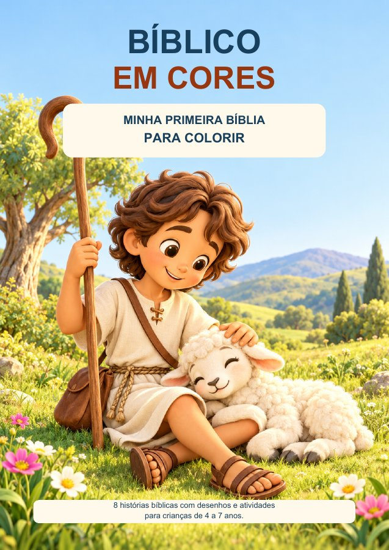

Minha Primeira Bíblia
para Colorir
Histórias da Bíblia, cores e descobertas
para compartilhar em família.

8 histórias bíblicas, desenhos para colorir
e atividades educativas.
- 41 páginas
- PDF A4 para imprimir
- 4 a 7 anos
R$ 14,90 à vista
Quero o livro para colorirLivro digital. Nenhum exemplar físico será enviado.
Compra pela Kiwify · Parcelamento com acréscimo.